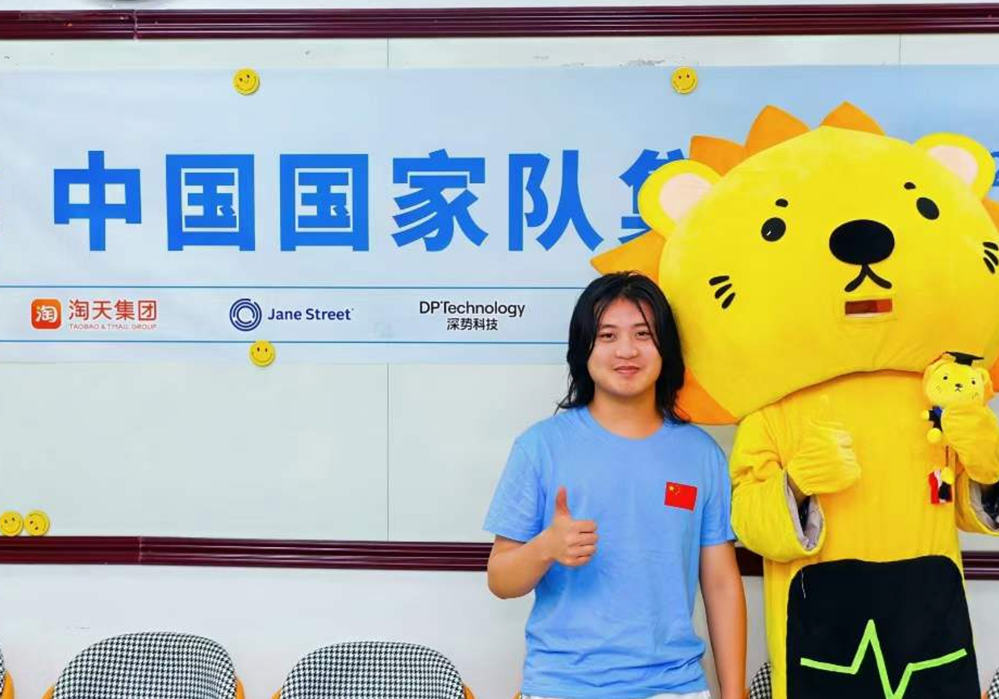

每周，留一张桌子。
把正在做的东西带来。一次没有跑通的实验，也值得大家花时间。我们想知道你为什么这样做、卡在哪里，以及下周准备试什么。
稻香湖 · 一个独立发起的 Fellowship
聚起一小群认真做事的人。 一起研究，互相引荐，让想法有条件发生。

稻香湖有一些人，已经把课余时间交给了一个问题。我们想把他们聚在一起。
它可能是一段反复重写的代码，一个还不能稳定工作的机器人，或一个暂时没人使用的产品。现在还很早，但投入已经是真的。
DXH Mafia 从这里开始。让一个人在摸索时，有人能看懂他的实验，愿意追问他的判断，也愿意把自己知道的东西交给他。
每周见面，把彼此的工作放在心上。
把正在做的东西带来。一次没有跑通的实验，也值得大家花时间。我们想知道你为什么这样做、卡在哪里，以及下周准备试什么。
有时候，缺的只是把一个判断跑出来的条件。我们围绕具体项目协调训练与推理算力，让讨论能继续走到实验里。
通过 Jiace 在 Stanford、UC Berkeley、CMU 和 MIT 的个人科研连接，对接适合的研究交流。带着一个具体问题，去了解别人怎样选择实验、判断结果、继续往前。

先认真了解彼此，再做一次合适的介绍。也许今天只是帮忙看一段代码，几年以后，会一起做一件更大的事。我们希望帮助在这个圈子里继续传下去。
算力和资源根据项目需要与实际可用情况安排。科研连接由个人提供，不代表院校官方合作。分享他人的讨论、作品或联系方式前，请先征得同意。
从稻香湖出发。各自探索，彼此支持。

Founder & Fellow
UC Berkeley · CS & Philosophy
USACO Platinum
MIT CSAIL · Research Intern during high school
Research @ Berkeley Sky & CMU
EdTech 创始人 · 已退出
奇点之声 · 创始人 & 主持人

Fellow
UC Berkeley · CS & Mathematics
Summer Research Academies Participant
CTB Global Finalist
Conrad Challenge Finalist

Fellow
IOAI 中国国家队
xinbot · 开源机器人框架 · 独立开发者
CLMCP · 研究主导 · Minecraft 语义导航
Differentiable · 设计 & 主导 · a+b → GPT
一段代码，一次实验，一个还没有完成的作品。让我们从你真正投入过的事情开始认识你。
也告诉我们你正在寻找什么，以及你愿意带给这个圈子什么。